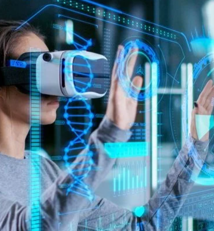
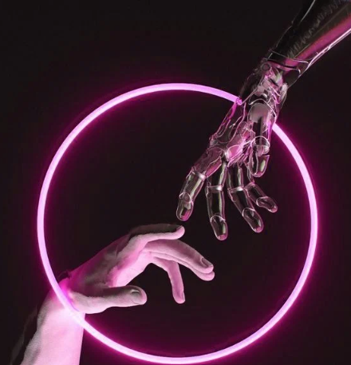

TENDENCIAS TECNOLOGÍAS 4: ROBÓTICA
SESIÓN 27 (18-05-2024)

La robótica es un campo en constante evolución que abarca el diseño, construcción,
programación y uso de robots, sistemas mecánicos automatizados capaces de realizar diversas
tareas en entornos reales. Algunas de las tendencias más significativas en robótica incluyen:
- Cobots (Robots Colaborativos): Los cobots son robots diseñados para operar de manera segura junto a los humanos en entornos compartidos. A diferencia de los robots industriales tradicionales, que suelen estar encerrados en jaulas de seguridad debido a sus movimientos rápidos y fuerza, los cobots están equipados con sensores avanzados y sistemas de seguridad que les permiten detectar la presencia humana y detenerse o ralentizarse automáticamente para evitar colisiones y accidentes. Esto los hace ideales para tareas colaborativas en sectores como la fabricación, la logística y la salud.
- Inteligencia Artificial y Aprendizaje Automático: La integración de inteligencia artificial (IA) y aprendizaje automático (machine learning) está transformando la capacidad de los robots para realizar tareas complejas y adaptarse a entornos variables. Los avances en algoritmos de IA permiten a los robots aprender de sus experiencias, mejorar la precisión de sus movimientos y tomar decisiones autónomas basadas en datos en tiempo real.
- Robots Autónomos: Los robots autónomos están diseñados para operar de manera completamente independiente en entornos dinámicos y variados. Estos robots utilizan sensores avanzados, sistemas de navegación y planificación de trayectorias para moverse y realizar tareas sin intervención humana directa. Los ejemplos incluyen robots de entrega autónomos, robots de limpieza para entornos comerciales y robots agrícolas para la cosecha automatizada.
- Robots Médicos y de Asistencia: La robótica también está revolucionando el campo de la medicina y la asistencia personal. Se están desarrollando robots quirúrgicos para realizar procedimientos precisos con menor invasión, así como robots de asistencia para apoyar a personas mayores o con discapacidades en actividades diarias como la movilidad, la alimentación y la comunicación.
- Ética y Seguridad Robótica: Con el aumento en la integración de robots en la sociedad, también crece la importancia de consideraciones éticas y de seguridad. Se están desarrollando normativas y estándares para asegurar que los robots operen de manera segura y ética, respetando los derechos y la privacidad de los individuos.
SESIÓN 28 (19-06-2024)

La Industria 4.0 representa la cuarta revolución industrial, caracterizada por la
integración avanzada de tecnologías digitales en los procesos de manufactura. Aquí están algunas
de las tendencias clave dentro de la Industria 4.0:
- Automatización Total: La automatización total implica sistemas completamente automatizados que utilizan tecnologías como robótica, IoT (Internet de las Cosas) y Big Data para optimizar la producción. Esto incluye robots industriales que trabajan junto con sistemas de control basados en IoT para monitorear y ajustar procesos en tiempo real. La recolección y análisis de Big Data permite mejorar la eficiencia, la calidad y la capacidad de respuesta en la producción.
- Mantenimiento Predictivo: El mantenimiento predictivo se basa en el uso de sensores instalados en equipos y maquinaria industrial. Estos sensores recopilan datos operativos en tiempo real, que luego son analizados mediante técnicas de Big Data y machine learning. Esto permite prever y prevenir fallos potenciales al identificar patrones que indiquen un deterioro o una anomalía antes de que ocurra un fallo grave. De esta manera, se puede programar el mantenimiento de manera proactiva, minimizando tiempos de inactividad no planificados y optimizando la vida útil de los equipos.
- Flexibilidad de Producción: En un entorno industrial flexible, los robots y sistemas de manufactura son reconfigurables y adaptables a diferentes tareas y lotes de producción. Esto se logra mediante robots colaborativos (cobots) y sistemas modulares que pueden ser rápidamente ajustados y reprogramados para cumplir con requisitos cambiantes de producción. La flexibilidad permite a las empresas responder más ágilmente a las demandas del mercado y optimizar el uso de recursos.